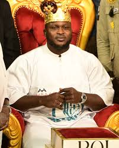
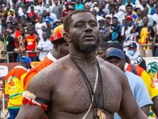
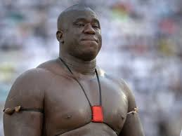
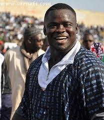
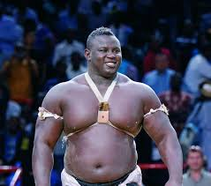
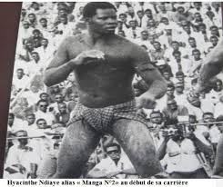
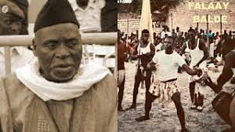

Les Grands Lutteurs
Découvrez les champions emblématiques de la lutte sénégalaise
Le Laamb, est bien plus qu’un sport. C’est un art de vivre, une tradition et un spectacle où la force, la stratégie et le courage se rencontrent. Explorez les parcours des plus grands lutteurs qui ont marqué l’histoire des arènes.







